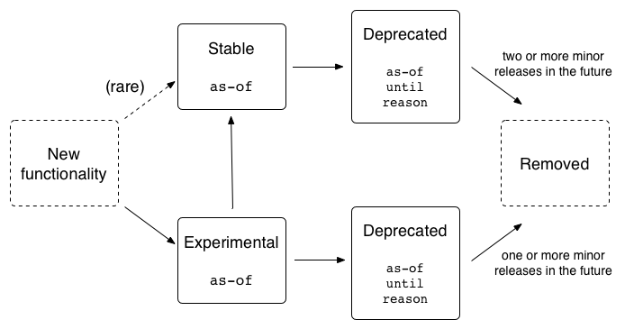

API Stability#
All public functionality in scikit-bio has a defined stability state. These states inform users and developers to what extent they can rely on different APIs in the package.
You can find out the stability state of public functionality by looking at its docstring, which is formatted based on numpydoc style guide. This information will either be in the Extended Summary section of the docstring, or in the case of deprecation, this information will appear as a note following the Short Summary.
The following diagram illustrates the API lifecycle in scikit-bio:
Definitions of the stability states and the information associated with each follow.
Stable#
Functionality defined as stable is part of scikit-bio’s backward-compatible API. Users can be confident that the API will not change without first passing through the deprecated state, typically for at least two release cycles. We make every effort to maintain the API of this code.
The docstrings of stable functionality will indicate the first scikit-bio version where the functionality was considered stable.
Experimental#
Functionality defined as experimental is being considered for addition to scikit-bio’s stable API. Users are encouraged to use this code, but to be aware that its API may change or be removed. Experimental functionality will typically pass through the deprecated state before it is removed, but in rare cases it may be removed directly (for example, if a serious methodological flaw is discovered that makes the functionality scientifically invalid).
The docstrings of experimental functionality will indicate the first scikit-bio version where the functionality was considered experimental.
We aim to move functionality through the experimental phase quickly (for example, two releases before moving to stable), but we don’t make specific promises about when experimental functionality will become stable. This aligns with our philosophy that we don’t make promises about experimental APIs, only about stable APIs.
Deprecated#
Functionality defined as deprecated is targeted for removal from scikit-bio. Users should transition away from using it.
The docstrings of deprecated functionality will indicate the first version of scikit-bio where the functionality was deprecated, the version of scikit-bio when the functionality will be removed, and the reason for deprecation of the code (for example, because a function was determined to be scientifically invalid, or because the API was adapted, and users should be using a different version of the function).
Using deprecated functionality will raise a DeprecationWarning. Since Python 2.7, these types of warnings are silenced by default. When developing a tool that uses scikit-bio, we recommend enabling the display of deprecation warnings to be informed of upcoming API changes. For details on how to display deprecation warnings, see Python’s deprecation warning docs.